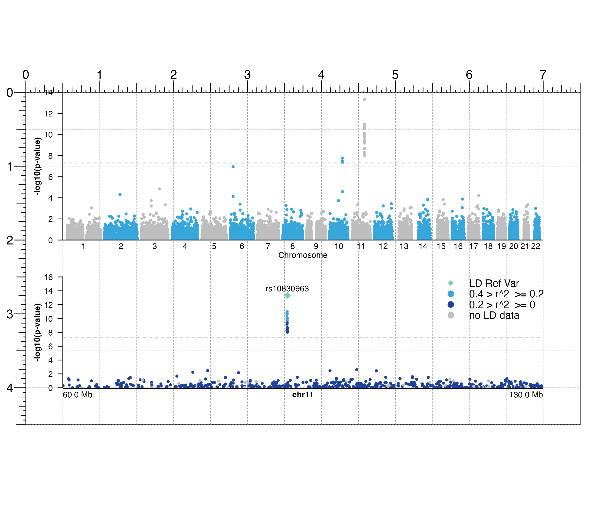

Plot a Manhattan plot
plotManhattan( data, sigVal = 5e-08, chrom = NULL, chromstart = NULL, chromend = NULL, assembly = "hg38", fill = "black", pch = 19, cex = 0.25, leadSNP = NULL, sigLine = FALSE, sigCol = NULL, ymax = 1, range = NULL, space = 0.01, bg = NA, baseline = FALSE, baseline.color = "grey", baseline.lwd = 1, x = NULL, y = NULL, width = NULL, height = NULL, just = c("left", "top"), flip = FALSE, default.units = "inches", draw = TRUE, params = NULL, ... )
| data | Data to be plotted, as a character value specifying a file path of GWAS data, a dataframe, or a GRanges object. Each of these data types must have the following columns:
|
|---|---|
| sigVal | A numeric specifying the significance level of p-values.
Along with data p-values, this value will be converted to -log(10) space.
Default value is |
| chrom | Chromosome of region to be plotted, as a string.
If left |
| chromstart | Integer start position on chromosome to be plotted. |
| chromend | Integer end position on chromosome to be plotted. |
| assembly | Default genome assembly as a string or a
assembly object.
Default value is |
| fill | A single character value, a vector, or a
colorby object specifying fill colors of data points.
For a Manhattan plot with multiple chromosomes, a vector of colors
will be used to color points of different chromosomes.
Default value is |
| pch | A numeric value or numeric vector specifying point symbols.
If colorby object is supplied for |
| cex | A numeric indicating the amount by which points should be
scaled relative to the default. Default value is |
| leadSNP | A list specifying the lead SNP in the desired region and
any associated aesthetic features of the lead SNP data point and text label.
The lead SNP should be specified as a character with the name slot
|
| sigLine | Logical value indicating whether to draw a line at the
significance level indicated with |
| sigCol | Single character value specifying the color of
significant data points. If |
| ymax | A numeric specifying the fraction of the max y-value to
set as the height of the plot. Default value is |
| range | A numeric vector of length 2 specifying the y-range of p-values to plot (c(min, max)). |
| space | A numeric value indicating the space between each
chromosome as a fraction of the width of the plot, if plotting multiple
chromosomes. Default value is |
| bg | Character value indicating background color.
Default value is |
| baseline | Logical value indicating whether to include a
baseline along the x-axis. Default value is |
| baseline.color | Baseline color. Default value
is |
| baseline.lwd | Baseline line width. Default value
is |
| x | A numeric or unit object specifying Manhattan plot x-location. |
| y | A numeric, unit object, or character containing a "b" combined with a numeric value specifying Manhattan plot y-location. The character value will place the Manhattan plot y relative to the bottom of the most recently plotted plot according to the units of the plotgardener page. |
| width | A numeric or unit object specifying Manhattan plot width. |
| height | A numeric or unit object specifying Manhattan plot height. |
| just | Justification of Manhattan plot relative to its (x, y)
location. If there are two values, the first value specifies horizontal
justification and the second value specifies vertical justification.
Possible string values are: |
| flip | Logical value indicating whether to reflect Manhattan plot
over the x-axis. Default value is |
| default.units | A string indicating the default units to use
if |
| draw | A logical value indicating whether graphics output should
be produced. Default value is |
| params | An optional pgParams object containing relevant function parameters. |
| ... | Additional grid graphical parameters. See gpar. |
Returns a manhattan object containing
relevant genomic region, placement, and grob information.
A Manhattan plot can be placed on a plotgardener coordinate page by providing plot placement parameters:
plotManhattan(data, chrom = NULL, chromstart = NULL, chromend = NULL, x, y, width, height, just = c("left", "top"), default.units = "inches")
This function can also be used to quickly plot an unannotated Manhattan plot by ignoring plot placement parameters:
plotManhattan(data, chrom = NULL, chromstart = NULL, chromend = NULL)
## Load genomic assembly information library("TxDb.Hsapiens.UCSC.hg19.knownGene") ## Load GWAS data library(plotgardenerData) data("hg19_insulin_GWAS") ## Create a page pageCreate(width = 7.5, height = 4.5, default.units = "inches")## Plot all GWAS data manhattanPlot <- plotManhattan( data = hg19_insulin_GWAS, assembly = "hg19", fill = c("grey", "#37a7db"), sigLine = TRUE, col = "grey", lty = 2, range = c(0, 14), x = 0.5, y = 0, width = 6.5, height = 2, just = c("left", "top"), default.units = "inches" )#>## Annotate genome label annoGenomeLabel( plot = manhattanPlot, x = 0.5, y = 2, fontsize = 8, just = c("left", "top"), default.units = "inches" )#>plotText( label = "Chromosome", fontsize = 8, x = 3.75, y = 2.20, just = "center", default.units = "inches" )#>## Annotate y-axis annoYaxis( plot = manhattanPlot, at = c(0, 2, 4, 6, 8, 10, 12, 14), axisLine = TRUE, fontsize = 8 )#>## Plot y-axis label plotText( label = "-log10(p-value)", x = 0.15, y = 1, rot = 90, fontsize = 8, fontface = "bold", just = "center", default.units = "inches" )#>## Plot GWAS data zooming in on chromosome 11 ## highlighting a lead SNP, and coloring by LD score hg19_insulin_GWAS$LD <- as.numeric(hg19_insulin_GWAS$LD) ## Group LD column into LD ranges hg19_insulin_GWAS <- as.data.frame(dplyr::group_by(hg19_insulin_GWAS, LDgrp = cut( hg19_insulin_GWAS$LD, c(0, 0.2, 0.4, 0.6, 0.8, 1)))) hg19_insulin_GWAS$LDgrp <- addNA(hg19_insulin_GWAS$LDgrp) leadSNP_p <- min(hg19_insulin_GWAS[ which(hg19_insulin_GWAS$chrom == "chr11"), ]$p) leadSNP <- hg19_insulin_GWAS[which(hg19_insulin_GWAS$p == leadSNP_p), ]$snp chr11_manhattanPlot <- plotManhattan( data = hg19_insulin_GWAS, chrom = "chr11", chromstart = 60000000, chromend = 130000000, assembly = "hg19", fill = colorby("LDgrp", palette = colorRampPalette(c( "#1f4297", "#37a7db", "green", "orange", "red", "grey" ))), sigLine = TRUE, col = "grey", lty = 2, range = c(0, 16), leadSNP = list( snp = leadSNP, pch = 18, cex = 0.75, fill = "#7ecdbb", fontsize = 8 ), scaleLD = "LD", x = 0.5, y = 2.5, width = 6.5, height = 1.5, just = c("left", "top"), default.units = "inches" )#>## Plot legend for LD scores plotLegend( legend = c( "LD Ref Var", paste("0.4", ">", "r^2", "", ">=", "0.2"), paste("0.2", ">", "r^2", "", ">=", "0"), "no LD data" ), fill = c("#7ecdbb", "#37a7db", "#1f4297", "grey"), cex = 0.75, pch = c(18, 19, 19, 19), border = FALSE, x = 7, y = 2.5, width = 1.5, height = 0.6, just = c("right", "top"), default.units = "inches" )#>## Annotate genome label annoGenomeLabel( plot = chr11_manhattanPlot, x = 0.5, y = 4.01, fontsize = 8, scale = "Mb", just = c("left", "top"), default.units = "inches" )#>## Annotate y-axis annoYaxis( plot = chr11_manhattanPlot, at = c(0, 2, 4, 6, 8, 10, 12, 14, 16), axisLine = TRUE, fontsize = 8 )#>## Plot y-axis label plotText( label = "-log10(p-value)", x = 0.15, y = 3.25, rot = 90, fontsize = 8, fontface = "bold", just = "center", default.units = "inches" )#>